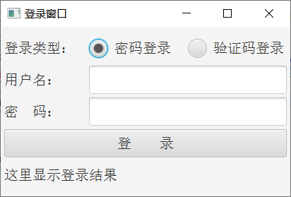
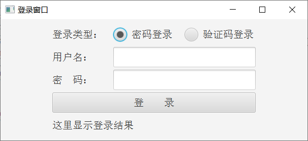
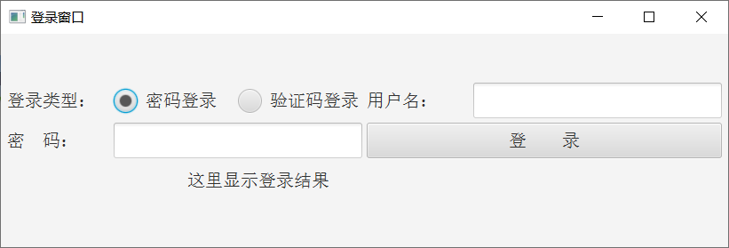
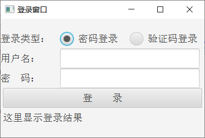
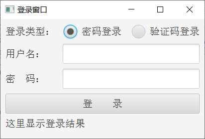
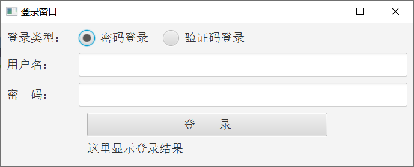
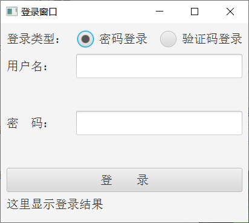

前面介绍了FXML的基本格式及其控制器的用法，算是打通了FXML方式的编码流程。程序界面通常保持固定尺寸，不过有时也允许用户拖曳窗口大小，不拖不打紧，一拖就可能坏事。像之前的登录窗口，没拖的时候界面如下图所示。

现在开始慢慢把窗口拖长，拖到一半停下来，此时登录界面如下图所示。

乍看过去，界面上的各控件大小保持不变，且始终居中显示，没发现什么问题。可是继续拖长窗口，突然之间这些控件乾坤大挪移，用户名区域顶到了第一行，登录按钮跟着顶到了第二行，变化后的界面效果如下图所示。

之所以出现控件排版错乱的问题，是因为该界面的根节点采用了流式窗格FlowPane。所谓流式，指的是从左到右排列，倘若没排满一行，就跟在当前行后面；只有排满了一行，才会另起一行继续排。刚刚拖拉窗口的时候，拖得太长了，导致窗口的宽度能够容纳登录类型与用户名两个区域，结果两块区域便挤到同一行了。显然这不是期望的界面布局，至少控件要老老实实呆在自己的位置，不可越雷池一步。
若想避免流式窗格排版飘忽的问题，可以使用垂直箱子VBox替换流式窗格，垂直箱子规定它的每个直接下级都占用一行，绝对不会产生两个直接下级挤在同一行的现象。于是修改原来的fxml文件，把根节点FlowPane换成VBox，对应的xml标签变为以下格式：
<VBox fx:controller="com.javafx.fxml.LoginController" xmlns:fx="http://javafx.com/fxml" alignment="center">
<!-- 这是xml注释标记。中间省略登录窗口的各控件标签 -->
</VBox>
fxml文件修改完毕，重新运行测试程序，弹出的登录窗口如下图所示。

现在不管怎样拉长窗口，各区域都留在当前行，再也不会乱跑了。然而采用VBox的界面很不协调，缘由在于VBox不支持hgap与vgap属性，因此各控件之间没能自动分隔开，几乎都粘在一起了，例如：
1、登录类型、用户名、密码三块区域的左侧直接顶到了窗口边缘；
2、用户名输入框、密码输入框、登录按钮三个自上往下紧紧贴着，不留一丝空隙；
似此过于紧凑的界面，令人感觉颇为拘谨，还是留个适当的间隔比较好。虽然VBox不支持hgap与vgap属性，但它另外提供了padding属性组，允许分别指定上、下、左、右四个方向的间距。padding节点挂在哪个VBox或HBox之下，就表示哪个箱子会在内部自动留白，padding对应的xml标签具体写法如下所示：
<padding>
<Insets top="10.0" bottom="10.0" left="10.0" right="10.0"/>
</padding>
上述的padding节点例子，定义了在上、下、左、右四个方向各留出10个像素的空白间距。考虑到VBox和HBox下面可能挂着好几个子控件，为了更好地将这些子控件跟padding区分开，fxml又给VBox和HBox引入了children子节点，凡是下级控件统统放到children节点之下，而padding节点专门放置四个方向的间隔距离。如此一来，形态完整的VBox节点结构变成了以下这般：
<VBox fx:controller="com.javafx.fxml.LoginController" xmlns:fx="http://javafx.com/fxml" alignment="center">
<children>
<!-- 这是xml注释标记。中间省略VBox的下级控件列表 -->
</children>
<padding>
<Insets top="10.0" bottom="10.0" left="10.0" right="10.0"/>
</padding>
</VBox>
由上面的xml样例可以看到，改进之后的VBox标签变得层次分明、结构清晰，大大增强了它的可读性。
除此之外，fxml还为VBox和HBox提供了自动伸展功能，也就是说，随着窗口尺寸的增大，VBox和HBox的宽高也会随之增大。其中水平方向的宽度自适应，由属性HBox.hgrow控制，其值为ALWAYS时表示当前箱子的宽度跟随上级变化；垂直方向的宽度自适应则由属性VBox.vgrow控制，其值为ALWAYS时表示当前箱子的高度跟随上级变化。尤其需要注意的是，除了VBox和HBox这两个箱子支持自动伸展以外，只有几个输入框控件支持自动伸展，其中TextField与PasswordField只支持水平方向上的自动伸展，而TextArea同时支持水平与垂直两个方向的自动伸展。
利用fxml的几个新节点和新属性改造原先的登录界面，一方面，整个登录界面在窗口四周边缘均留白，各行之间也留出一条缝隙；另一方面，令用户名输入框和密码输入框支持水平伸展，令用户名区域和密码区域支持垂直伸展。这么改造一番之后的fxml文件示例如下：
<VBox fx:controller="com.javafx.fxml.LoginController" xmlns:fx="http://javafx.com/fxml" alignment="center">
<children>
<HBox fx:id="hbType" prefWidth="400" prefHeight="40">
<children>
<Label fx:id="labelType" prefWidth="120" prefHeight="40" text="登录类型：" />
<fx:define>
<ToggleGroup fx:id="tgType" />
</fx:define>
<RadioButton fx:id="rbPassword" prefWidth="140" prefHeight="40" toggleGroup="$tgType"
text="密码登录" selected="true" />
<RadioButton fx:id="rbVerifycode" prefWidth="140" prefHeight="40" toggleGroup="$tgType"
text="验证码登录" />
</children>
<padding>
<Insets top="0.0" bottom="10.0" left="0.0" right="0.0"/>
</padding>
</HBox>
<HBox fx:id="hbUser" prefWidth="400" prefHeight="40" VBox.vgrow="ALWAYS">
<children>
<Label fx:id="labelUser" prefWidth="120" prefHeight="40" text="用户名：" />
<TextField fx:id="fieldUser" prefWidth="280" prefHeight="40" HBox.hgrow="ALWAYS" />
</children>
<padding>
<Insets top="0.0" bottom="10.0" left="0.0" right="0.0"/>
</padding>
</HBox>
<HBox fx:id="hbPassword" prefWidth="400" prefHeight="40" VBox.vgrow="ALWAYS">
<children>
<Label fx:id="labelPassword" prefWidth="120" prefHeight="40" text="密 码：" />
<PasswordField fx:id="fieldPassword" prefWidth="280" prefHeight="40" HBox.hgrow="ALWAYS" />
</children>
<padding>
<Insets top="0.0" bottom="10.0" left="0.0" right="0.0"/>
</padding>
</HBox>
<Button fx:id="btnLogin" prefWidth="400" prefHeight="40" text="登 录" />
<Label fx:id="labelLoginResult" prefWidth="400" prefHeight="40" text="这里显示登录结果" />
</children>
<padding>
<Insets top="10.0" bottom="10.0" left="10.0" right="10.0"/>
</padding>
</VBox>
再次运行测试程序，弹出的登录窗口如下图所示，果然各级控件与周边都隔了一小段距离。

接着在水平方向拉长窗口，拉长之后的窗口界面如下面左图所示。回到初始尺寸，在垂直方向拉高窗口，拉高之后的如下面右图所示。

从上面两张效果图可见，几个箱子和输入框的宽高确实跟随窗口尺寸的变化而变化。
更多Java技术文章参见《Java开发笔记（序）章节目录》